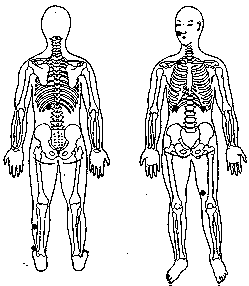

Sequência da Energia Descendente Anterior.
Revitaliza a energia da Função do Estômago. Alivia a preocupação e o estresse mental. Dissipa congestões acima da cintura, resolve problemas de peso.
|
M.e. base do osso malar direito TSE 21; M.d. no centro da clavícula direita TSE 22. M.e. permanece do osso malar direito TSE 21; M.d. deslocar para o peito parte inferior esquerda da caixa torácica TSE 14.
M.e. permanece do osso
malar direito TSE 21;
M.d. deslocar para um pouco acima da região lombar esquerda TSE 23.
M.e. permanece do osso
malar direito TSE 21;
M.d. deslocar para o peito parte inferior direito da caixa torácica TSE 14.
M.e. permanece
do osso malar direito TSE 21;
M.d.
deslocar para a face interna do meio da
coxa esquerda TSE 1 alta;
M.e. permanece
do osso malar direito TSE 21;
M.d.
deslocar para o meio da canela esquerda
face externa TSE 8 baixa;
M.e. permanece
do osso malar direito TSE 21;
M.d.
deslocar para o terceiro dedo do pé
esquerdo segurando com os dedos indicador e o polegar da mão.
|

|
Notas:1 - M.d. = mão direita M.e. = mão esquerda.2 - O texto sublinhado indica que pode ser feito usando alternadamente o lado direito (mão direita) e depois o lado esquerdo (mão esquerda). 3 - Tocar a área indicada, com a ponta dos dedos da mão, durante alguns minutos ou até sentir uma pulsação rítmica. Não precisamos nos preocupar em demasia com a precisão da área indicada, pois cada trava de segurança da energia tem uma abragência de uns sete centímetros em torno de si.
Voltar para Seqüências Zeladoras Diárias.